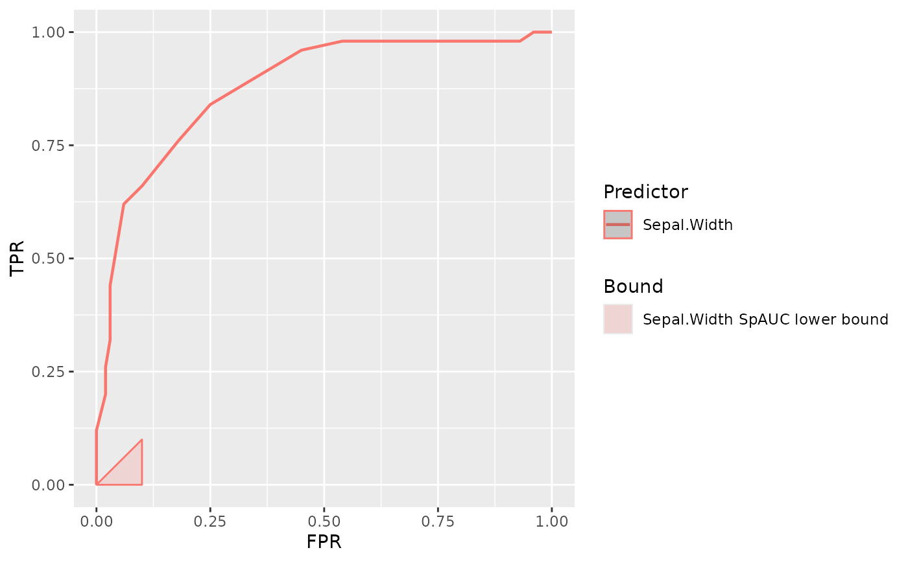

Calculate and plot lower bound defined by SpAUC specificity index.
Usage
add_spauc_lower_bound(
data,
response = NULL,
predictor = NULL,
lower_threshold,
upper_threshold,
.condition = NULL,
.label = NULL
)Arguments
- data
A data.frame or extension (e.g. a tibble) containing values for predictors and response variables.
- response
A data variable which must be a factor, integer or character vector representing the prediction outcome on each observation (Gold Standard).
If the variable presents more than two possible outcomes, classes or categories:
The outcome of interest (the one to be predicted) will remain distinct.
All other categories will be combined into a single category.
New combined category represents the "absence" of the condition to predict. See
.conditionfor more information.- predictor
A data variable which must be numeric, representing values of a classifier or predictor for each observation.
- lower_threshold, upper_threshold
Two numbers between 0 and 1, inclusive. These numbers represent lower and upper bounds of the region where to apply calculations.
- .condition
A value from response that represents class, category or condition of interest which wants to be predicted.
If
NULL, condition of interest will be selected automatically depending onresponsetype.Once the class of interest is selected, rest of them will be collapsed in a common category, representing the "absence" of the condition to be predicted.
See
vignette("selecting-condition")for further information on how automatic selection is performed and details on selecting the condition of interest.- .label
A string representing the name used in labels.
If
NULL, variable name frompredictorwill be used as label.
Details
SpAUC presents some limitations regarding its lower bound. Lower bound defined by this index cannot be applied to sections where ROC curve is defined under chance line.
add_spauc_lower_bound() doesn't make any check to ensure the index can be
safely applied. Consequently, it allows to enforce the representation even
though SpAUC cound't be calculated in the region.
Examples
plot_roc_curve(iris, response = Species, predictor = Sepal.Width) +
add_spauc_lower_bound(
iris,
response = Species,
predictor = Sepal.Width,
lower_threshold = 0,
upper_threshold = 0.1
)
